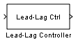
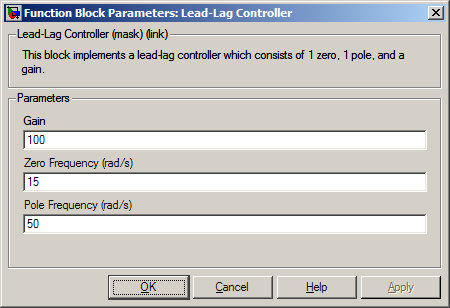
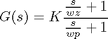
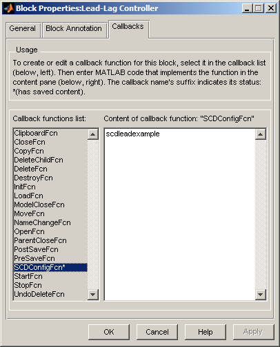
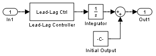
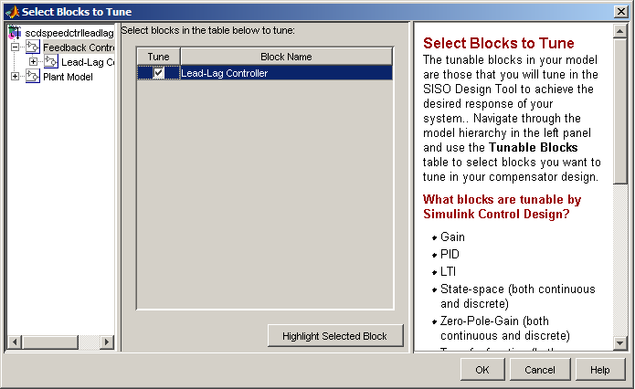
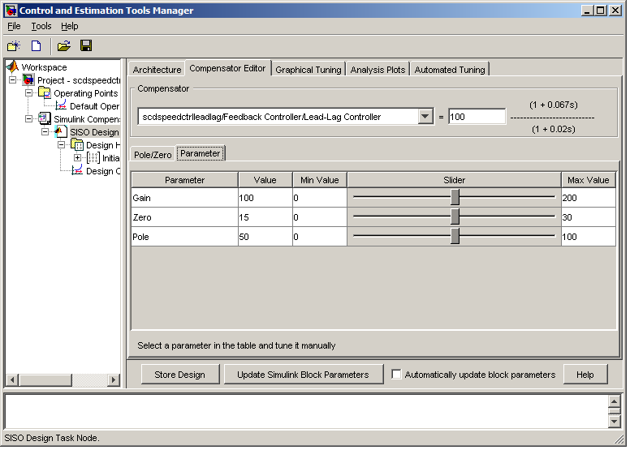
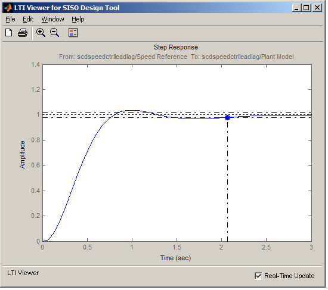

カスタムのマスク サブシステムの調整
目次
はじめに
このデモでは、Simulink® 補償器設計作業でカスタムのマスク サブシステムを有効にする方法を説明します。設定すると、ブロックは Simulink Control Design のサポートされているブロックと同じ方法で使用できます。
Lead-Lag Library ブロック
設定されたリードラグ ブロックの例は、scdexblks ライブラリにあります。
open_system('scdexblks');
 リードラグ ブロックは、単一の零点および極を持つ補償器の要素を実現します。3 つのパラメーター K、wz、wp があり、ブロック ダイアログで設定されます。

次に、マスク内で使用されるパラメーターによって、等価な伝達関数が作成されます。

Simulink® 補償器設計作業のサブシステムの設定
Simulink Control Design のマスク サブシステムの設定は、設定関数で指定されます。このデモでは、設定関数は M ファンクション scdleadexample.m に書き込まれています。この設定関数により、以下のように指定されます。
- 最大 1 つの極だけが許可される (MaxPoles Constraint)
- 最大 1 つの零点だけが許可される (MaxZeros Constraint)
- ゲインは調整可能である (isStaticGainTunable Constraint)
設定は、ブロックの SCDConfigFcn パラメーターを使用して、サブシステムに登録されます。この関数は、コマンド set_param または[ブロック プロパティ] ダイアログを使用して設定できます。このダイアログは、サブシステムを右クリックしてアクセスします。

SCDConfigFcn を設定すると、ブロックは Simulink 補償器設定作業で使用できるようになります。
例
リードラグ ブロックを使用すると、単ループのフィードバック/プレフィルターの設計のデモのフィードバック ループを調整できます。補償器設計プロセスを開始するには、次のようにします。
手順 1 モデル scdspeedctrlleadlag の新しい Simulink 補償器設計作業を開始します。開始するには、Simulink モデルから [ツール]、[制御設計]、[補償器設計] を選択します。
手順 2 次のブロックを選択し、[調整可能なブロック] パネルの [ブロックの選択...] をクリックして調整します。
- scdspeedctrlleadlag/Feedback Controller/Lead-Lag Controller
load_system('scdspeedctrlleadlag') open_system('scdspeedctrlleadlag/Feedback Controller')
リードラグ ブロックが Feedback Controller サブシステムに表示されます。

手順 3 [線形化のポイント] メニューをクリックして使用し、閉ループ信号を選択します。
- 入力:scdspeedctrlleadlag/Speed Reference 出力端子 1
- 出力 scdspeedctrlleadlag/Speed Output 出力端子 1
手順 4 [操作点] パネルで [既定操作点] を選択します。
手順 5 [ブロックの調整...] ボタンをクリックして、設計の設定ウィザードを起動します。
開ループを scdspeedctrlleadlag/Feedback Controller/Lead-Lag Controller の 出力 1 で調整するには、プロット 1 に対して開ループ 1 を選択し、プロット タイプとして開ループのボード線図を選択します。
ウィザードで、プロット 2 に対して閉ループ 1 を選択し、プロット タイプとして閉ループ ボード線図を選択します。
ウィザードの手順 2 で、プロット 1 とプロット 2 に対するステップ応答を選択します。次に、[プロットの内容] テーブルで、以下のようにします。
- Closed Loop from /Speed Reference to scdspeedctrl/Speed Output| のプロット 1 を選択する
ウィザードが完了すると、SISO 設計作業ノードが作成されます。この作業ノードを使用して、設計を完成させます。[補償器エディター] タブに移動し、リードラグ補償器を調整します。これで、リードラグ ブロックに対するブロック パラメーターは調整できます。

完了した設計
単ループのフィードバック/プレフィルターの設計のデモの参照ステップ応答の設計要件は、次のコントローラー パラメーターを使用して満たすことができます。
- scdspeedctrlleadlag/Feedback Controller/Lead-Lag Controller has parameters:
Gain = 0.0075426
Zero Frequency (rad/s) = 2
Pole Frequency (rad/s) = 103.59
閉ループ システムの応答は以下のとおりです。

Simulink への設計の書き込み
次に、[Simulink ブロック パラメーターの更新] ボタンをクリックすると、この設計を非線形モデルに対してテストできます。これにより、パラメーターが Simulink モデルに書き込まれます。
bdclose('scdexblks') bdclose('scdspeedctrlleadlag')